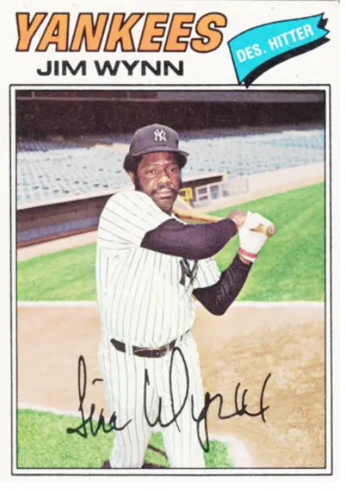
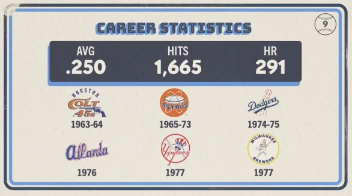

Jim Wynn "The Toy Cannon"
Career Highlights & Facts
(Facts are AI-generated and may require verification)
- Earned the nickname The Toy Cannon due to a powerful throwing arm and short stature.
- Represented the National League in three All-Star Games during a 15-season career.
- Hit 291 career home runs while drawing 936 walks.
Would you like to find out more about Jim Wynn?
Career Totals
| WAR | AB | H | HR | BA | R | RBI | SB | OBP | SLG | OPS | OPS+ |
|---|---|---|---|---|---|---|---|---|---|---|---|
| 55.9 | 6653 | 1665 | 291 | .250 | 1105 | 964 | 225 | .366 | .436 | .802 | 129 |
Statistics via Baseball-Reference.com
The Original Clue
